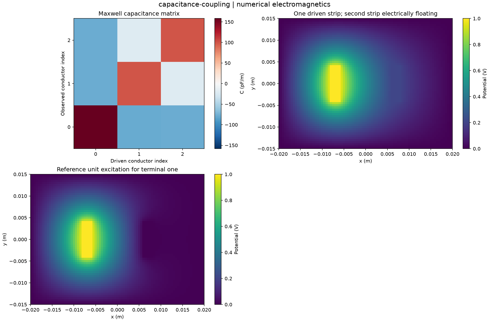

Reproducible numerical electromagnetics. Units and field components are printed on the scientific axes. Peak phasors use exp(+i omega t); outgoing waves use exp(-i k r).
Sealed numeric archive | Summary CSV | Physical parameters | Run request | Source and environment

| field_energy_j_m | 4.7785249891818594e-11 |
|---|---|
| floating_charge_c_m | 8.395935382086134e-28 |
| floating_voltage_v | 0.20758881224969894 |
| relative_reciprocity_defect | 8.770587397771957e-15 |
| terminal_energy_j_m | 4.778524989181823e-11 |
These are simulations, not hardware measurements. Mesh, boundary, truncation and statistical uncertainty require distinct convergence checks. Singular or unilluminated data use explicit masks.
Source revision: 255b9ec965941d1fc97a04b9f7e2101e959fbeca.
Dirty checkout: False.
Configuration SHA-256: b288f9353822598d52842824f6955a6906c0af407c5be9274d7dd263ed5dee45.
Replay preserves original source and parameter provenance. SHA-256 manifests detect changed bytes; they are unsigned integrity records, not certificates of physical validity.